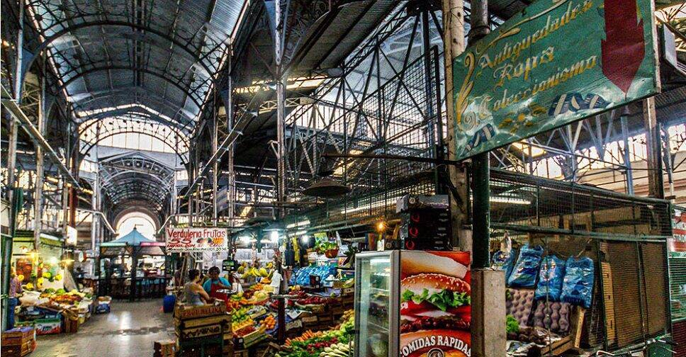
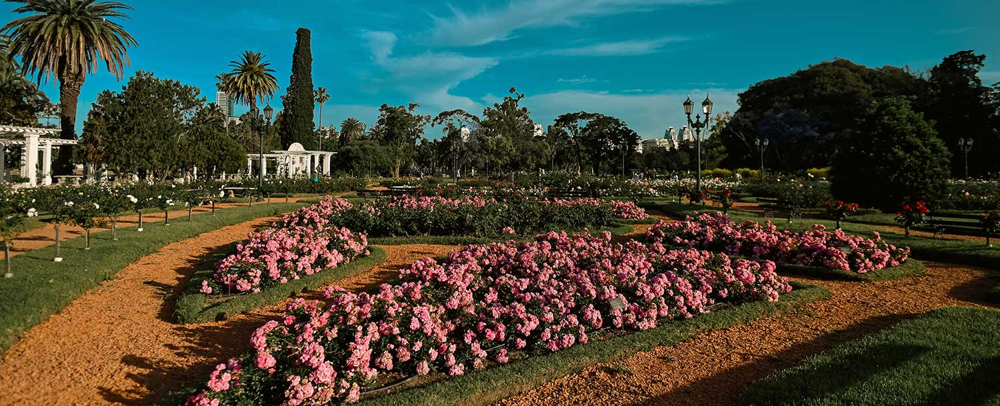
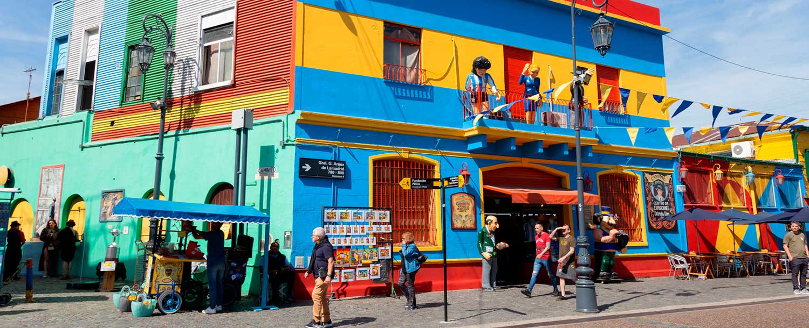

Principales Puntos de Interés
1. Mercado y Barrio de San Telmo
Ubicación: Casco Histórico - Comuna 1.

Uno de los barrios más antiguos y tradicionales de la ciudad. Sus calles empedradas, casonas coloniales y el histórico
Mercado de San Telmo reúnen antigüedades, cultura popular y una gastronomía variada.
¿Qué podés hacer acá?
- Recorrer la famosa Feria de Antigüedades en la Plaza Dorrego los domingos.
- Probar platos típicos argentinos y empanadas criollas dentro del mercado.
- Ver espectáculos callejeros de tango en vivo al paso.
¿Por qué recomendamos visitarlo? Es el lugar ideal para respirar la historia porteña, conseguir recuerdos únicos y disfrutar del tango en su hábitat natural.
2. Bosques y Rosedal de Palermo
Ubicación: Zona Norte - Comuna 14.

Un enorme pulmón verde en medio de la ciudad. Cuenta con un gran lago central, el histórico Rosedal con miles de especies de rosas, y áreas de descanso rodeadas de naturaleza.
Actividades sugeridas para el recorrido:
- Alquilar un bote a pedal para navegar por el lago central.
- Pasear por el Puente Blanco y el Jardín de los Poetas en el Rosedal.
- Hacer picnic, andar en bicicleta o patinar por la avenida infanta Isabel.
¿Por me recomendás visitarlo? Ofrece un refugio de tranquilidad, aire puro y paisajes hermosos para despejarse durante la tarde.
3. Caminito y Barrio de La Boca
Ubicación: Zona Sur - Comuna 4.

Famoso por sus casas de chapa de vivos colores (conventillos), sus orígenes ligados a los inmigrantes italianos y su estrecha vinculación con la pasión futbolera y el arte popular.
Propuestas culturales y eventos relacionados:
- Galerías de arte callejero: Exposición permanente de pintores e influencias de Benito Quinquela Martín.
- Visita al Estadio La Bombonera: Recorrido por el museo del club Boca Juniors a pocas cuadras de Caminito.
¿Por qué recomendamos visitarlo? Es una postal icónica y colorida reconocida a nivel mundial que refleja las raíces culturales y populares de la ciudad.